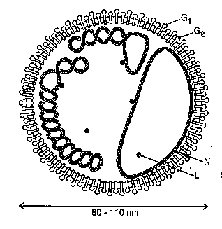

Infection of Arabidopsis thaliana ecotype Columbia by Tomato Spotted Wilt Virus
Thomas L.German[1], Scott Adkins[1], Andy Witherell[1], Kathryn E. Richmond[1], William R. Knaack[1], and David K. Willis[1,2,*][1]Department of Plant Pathology, and [2]USDA/ARS Plant Disease Resistance Unit, University of Wisconsin, Madison, WI 53706
*corresponding author
Email address: dkw@plantpath.wisc.edu
Abstract
Mechanical inoculation of Arabidopsis thaliana ecotype Columbia with tomato spotted wilt virus led to viral replication and spread as determined by dot blot and ELISA analysis. Severe symptoms were observed three to four weeks post-inoculation. Early symptoms were manifested as chlorotic spots on uninoculated leaves. Later in the infection process, some plants showed complete chlorosis and wilting prior to bolting. Bolts that were developed by infected plants were chlorotic and deformed. These preliminary results suggest that A. thaliana could become a model system for the genetic analysis of host factors required for the replication of viruses in the family Bunyaviridae, which includes viruses that cause important diseases of both plants and animals.
Introduction
The genus Tospovirus contains the plant-infecting members of the family Bunyaviridae, a large group of enveloped viruses with tripartite genomes of negative and ambisense RNA (reviewed by Elliott 1990). Tomato spotted wilt virus (TSWV), the type member of this genus (reviewed by German et al. 1992), replicates in both plant hosts and thrips (Thysanoptera: Thripidae), its exclusive insect vector (Ullman et al. 1993; Wijkamp et al. 1993). The host range of TSWV includes more than 400 plant species, both monocots and dicots, in 50 families (Cho et al. 1987; Peters et al. 1991). The wide host range of the virus and vector and lack of effective management strategies leads to major worldwide economic losses (German et al. 1992).Tomato spotted wilt virus
TSWV virions contain two glycosylated membrane proteins (G1 and G2), a putative RNA-dependent-RNA polymerase (RdRp) protein (L) and the nucleocapsid protein (N), which encapsidates the small (S), medium (M) and large (L) genomic RNAs (Fig. 1).
Figure 1. Representation of a tomato spotted wilt virus particle depicting the RNAs as non-covalently-closed circles associated with many copies of the N protein, G1 and G2 viral glycoproteins projecting from the membrane and a few copies of the L protein within the virion.
The ambisense 2.9 kb S RNA encodes a 52.4 kDa non-structural protein (NSs) in the viral (v) sense and the 29 kDa N protein in the viral complementary (vc) sense. The viral N protein is expressed from a viral complimentary sense 1.2 kb subgenomic mRNA and the NSs by a viral-sense sub-genomic mRNA 1.7 kb in length (De Haan et al. 1990). The 4.8 kb M RNA encodes a 33.6 kDa non-structural protein (NSm) in the v sense and a 127.4 kDa precursor to G1 and G2 in the vc sense . In an expression strategy similar to the S RNA, the open reading frames (ORFs) of the M RNA are expressed from subgenomic mRNAs of 1.1 kb (NSm) and 3.5 kb (G2G1 precursor) transcribed from opposite sense strands (Kormelink et al. 1992). The 8.9 kb L RNA is completely negative-sense and contains a single open reading frame in the vc sense encoding the 331.5 kDa L protein. L RNA expression occurs via the synthesis of a genome sized mRNA (De Haan et al. 1991; Kormelink et al. 1992).
Enzyme Activities Associated with Purified Bunyaviruses
Unlike positive-sense RNA viruses whose message sense genomic RNAs can be directly translated without transcription, all negative-sense RNA viruses encapsidate a virus-encoded RdRp in their particles. The RdRp plays an essential role in the infection cycle of negative-sense RNA viruses, especially at its initiation where the RdRp transcribes viral genomic RNAs into mRNAs. RdRp activity has been detected in detergent-disrupted virions of Uukuniemi (Ranki and Pettersson 1975), Lumbo (Bouloy and Hannoun 1976), Hantaan (Schmaljohn and Dalrymple 1983), La Crosse (Patterson et al. 1984) and Germiston (Vialat and Bouloy 1992) bunyaviruses, five vertebrate-infecting members of the Bunyaviridae. All known bunyaviruses encode and encapsidate a large (L) protein of greater than 200 kDa (reviewed by Elliott 1990) that contains several amino acid motifs conserved in RdRps, some of which (e.g. SDD) are characteristic of the RdRps of segmented negative-sense RNA viruses (Tordo et al. 1992). RdRp activity has been directly linked to the L protein of Bunyamwera virus, the type member of the family Bunyaviridae, by in vivo expression studies using recombinant vaccinia viruses (Jin and Elliott 1991).Short, heterogeneous, non-viral sequences have been detected at the 5' ends of the mRNAs of several animal-infecting bunyaviruses demonstrating that these viruses use capped, 5' terminal sequences derived from host cell mRNAs to prime viral transcription (reviewed by Elliott 1990). These primers are generated by a process called cap snatching, in which the 5' terminal sequence of cellular mRNAs are cleaved endonucleolytically (Plotch et al. 1981). The endonuclease activity responsible for cap snatching in Germiston (Vialat and Bouloy 1992) and La Crosse (Patterson et al. 1984) bunyavirus transcription is virus-encoded.
The large size of the bunyavirus L proteins suggest that they are multifunctional, and most probably have a role in replication, transcription and cap snatching. Investigation of the putative RdRps (L proteins) of the Tospoviruses has been limited to sequence analysis of the gene encoding the TSWV L protein, which revealed the conserved polymerase motifs noted above (De Haan et al. 1991; Tordo et al. 1992), and serological demonstration of the presence of the 331.5 kDa L protein in virions (Adkins et al. 1995; Van Poelwijk et al. 1993). Non-viral sequences, 12 to 20 nucleotides in length, have recently been detected at the 5' ends of the N and NSs mRNAs of TSWV. This provides the first evidence of a plant virus using a cap snatching to prime transcription of its genome (Kormelink et al. 1992). Recent experiments in our laboratory provide the first direct evidence of an RdRp activity associated with purified virions of TSWV (Adkins et al. 1995).
Host Factors Required for TSWV Infection
As with the majority of plant viruses, almost nothing is known about the various plant factors that are required for virus replication and systemic spread of the virus throughout the plant. While in vitro experiments have implicated several host factors in the replication of RNA viruses (Quadt et al. 1993), no direct genetic evidence has been reported to biologically support the role of these host factors in viral infection.
Materials and Methods
Growth and infection of plants. A. thaliana ecotype Columbia plants were grown in Metro Mix 200 (W. R. Grace & Co.) in 2 inch pots at 24°C with a 12 hour light/dark cycle in a Percival I-35LLVL growth chamber. Plants were mechanically inoculated with TSWV using carborundum four to five weeks after planting (Gonsalves and Trujillo 1986). The inoculum was maintained by thrips transmission to Emilia sonchifolia L. (kindly provided by Diane Ullman). The propagation of TSWV by thrips transmission is critical due to the loss of virulence observed when the virus is maintained by repeated mechanical passage. The viability of the inoculum was confirmed by mechanical infection of Jimson weed (Datura stramonium L.) which resulted in the appearance of typical TSWV symptoms (data not shown).Dot blot and ELISA assays. Dot blots using a TSWV-specific cDNA probe were performed as previously described (Rice et al. 1990). Enzyme-linked immunosorbent assay analysis (ELISA) was conducted using a commercially available kit (Agdia, Elkhart, IN). For both analyses, TSWV infected Datura served as a positive control.
Results
Two separate infectivity experiments were performed. In both experiments, the initial symptoms of TSWV infection appeared 3 weeks post-inoculation and were manifested by the appearance of chlorotic spots on uninoculated leaves (Fig. 2 ). Fig. 3 shows the dot blot analysis of infected plants from the first experiment.
Click to see Fig. 2.
Figure 2. Leaves from TSWV infected and mock inoculated A. thaliana ecotype Columbia plants at three weeks post-inoculation. The chlorotic spots exhibited by the infected leaf are typical of early infection symptoms.
{kind=link}
Click to see Fig. 3.
Figure 3. Dot blot analysis of infected and mock inoculated A. thaliana ecotype Columbia leaves harvested from two different plants three weeks post-inoculation. Viral RNA isolated from intact TSWV virions was used as a control.
{kind=link}
An ELISA analysis was performed in the second experiment on symptomatic leaves taken from three weeks post-inoculation. The results were as follows: TSWV inoculated = 0.687 OD490 units; mock-inoculated = 0.002 OD490 units; TSWV-infected Datura control = 0.610 OD490 units. Four weeks post-inoculation, infected plants begin to exhibit sever chlorosis and wilt. Typically the bolt will be severely chlorotic and deformed (Fig. 4). The complete wilt of infected plants prior to bolting is not unusual.
Click to see Fig. 4.
Figure 4. Advance symptoms of TSWV on ecotype Columbia four weeks post-inoculation.
{kind=link}
Discussion
The replication of TSWV within A. thaliana allows us to undertake the analysis of host genes required for infection in a well defined genetics system. We are currently investigating the ability of various A. thaliana ecotypes to support TSWV infection. We have also begun the screening of EMS-generated M2 Columbia plants for mutants that no longer exhibit symptoms when infected by TSWV. It is our hope to identify mutants that no longer support the replication or the spread of TSWV. We have not investigated the thrips transmission of TSWV to A. thaliana, however, we have noted that thrips infestation occurs fairly regularly in our growth chambers. It will be of interest to pursue the thrips transmission of TSWV to M2 populations of A.thaliana
Acknowledgments
This work was supported by grant BIR-9220331 from the DOE/NSF/USDA Collaborative Program on Research in Plant Biology to UW-Madison and by USDA-CSRS grant 91-37302-6295 to TLG.
References
Adkins, S., Quadt, R., Choi, T.-J., Ahlquist, P. and German, T. L. 1995. An RNA-dependent RNA polymerase activity associated with virions of tomato spotted wilt virus, a plant- and insect-infecting bunyavirus. Virology (in press):Bouloy, M. and Hannoun, C. 1976. Studies on Lumbo virus replication: I. RNA-dependent RNA polymerase associated with virions. Virology 69:258-264.
Cho, J. J., Mau, R. F. L., Mitchell, W. C., Gonsalves, D. and Yudin, L. 1987. Host list of tomato spotted wilt virus (TSWV) susceptible plants. Univ. Hawaii, Coll. Trop. Agri. Human. Resour. Res. Ext. Ser. 078,
De Haan, P., Kormelink, R., Resende, R. d. O., Van Poelwijk, F., Peters, D. and Goldbach, R. 1991. Tomato spotted wilt virus L RNA encodes a putative RNA polymerase. J. Gen. Virol. 72:2207-2216.
De Haan, P., Wagemakers, L., Peters, D. and Goldbach, R. 1990. The S RNA segment of tomato spotted wilt virus has an ambisense character. J. Gen. Virol. 71:1001-1007.
Elliott, R. M. 1990. Molecular biology of the Bunyaviridae. J. Gen. Virol. 71:501-522.
German, T. L., Ullman, D. E. and Moyer, J. W. 1992. Tospoviruses: diagnosis, molecular biology, phylogeny, and vector relationships. Annu. Rev. Phytopathol. 30:315-348.
Gonsalves, D. and Trujillo, E. E. 1986. Tomato spotted wilt virus in papaya and detection of the virus by ELISA. Plant Dis. 70:501-506.
Jin, H. and Elliott, R. M. 1991. Expression of functional Bunyamwera virus L protein by recombinant vaccinia viruses. J. Virol. 65:4182-4189.
Kormelink, R., De Haan, P., Meurs, C., Peters, D. and Goldbach, R. 1992. The nucleotide sequence of the M RNA segment of tomato spotted wilt virus, a bunyavirus with two ambisense RNA segments. J. Gen. Virol. 73:2795-2804.
Kormelink, R., Van Poelwijk, F., Peters, D. and Goldbach, R. 1992. Non-viral heterogeneous sequences at the 5' ends of tomato spotted wilt virus mRNAs. J. Gen. Virol. 73:2125-2128.
Patterson, J. L., Holloway, B. and Kolakofsky, D., . 1984. La Crosse virions contain a primer-stimulated RNA polymerase and amethylated cap-dependent endonuclease. J. Virol. 52:215-222.
Peters, D., de Avila, A. C., Kitajima, E. W., Resende, R. d. O., De Haan, P. and Goldbach, R. W. 1991. An overview of tomato spotted wilt virus: Virus-thrips-plant interaction of tomato spotted wilt virus. Proc. USDA Workshop, US Dept. of Agric. Agric. Res. Serc., ARS-87.
Plotch, S. J., Bouloy, M., Ulmanen, I. and Krug, R. M. 1981. A unique cap (m7GpppXm)-dependent influenza virion endonuclease cleaves capped RNAs to generate the primers that initiate viral RNA transcription. Cell 23:847-858.
Quadt, R., Kao, C. C., Browning, K. S., Hershberger, R. P. and Ahlquist, P. 1993. Characterization of a host protein associated with brome mosaic virus RNA-dependent RNA polymerase. Proc. Natl. Acad. Sci. USA 90:1498-1502.
Ranki, M. and Pettersson, R. F. 1975. 1975. J. Virol. 16:1420-1425.
Rice, D. J., German, T. L., Mau, R. F. L. and Fujimoto, F. M. 1990. Dot blot detection of tomato spotted wilt virus RNA in plant and thrips tissues by cDNA clones. Plant. Dis. 74:274-276.
Schmaljohn, C. S. and Dalrymple, J. M. 1983. Analysis of Hantaan virus RNA: Evidence for a new genus of Bunyaviridae. Virology 131:482-491.
Tordo, N., De Haan, P., Goldbach, R. and Poch, O. 1992. Evolution of negative-stranded RNA genomes. Sem. Virol 3:341-357.
Ullman, D. E., German, T. L., Sherwood, J. L., Westcot, D. M. and Cantone, F. A. 1993. Tospovirus replication in insect vector cells: Immunocytochemical evidence that the nonstructural protein encoded by the S RNA of tomato spotted wilt Tospovirus is present in thrips cells. Phytopathology 83:456-463.
Van Poelwijk, F., Boye, K., Oosterling, R., Peters, D. and Goldbach, R. 1993. Detection of the L protein of tomato spotted wilt virus. Virology 197:468-470.
Vialat, P. and Bouloy, M. 1992. Germiston virus transcriptase requires active 40S ribosomal subunits and utilizes capped cellular RNA. J. Virol. 66: 685-693.
Wijkamp, I., Van Lent, J., R., K., Goldbach, R. and Peters, D. 1993. Multiplication of tomato spotted wilt virus in its vector, Frankliniella occidentalis. J. Gen. Virol. 74:341-349.
 Return to Contents Page: Weeds World Vol2(i)
Return to Contents Page: Weeds World Vol2(i)